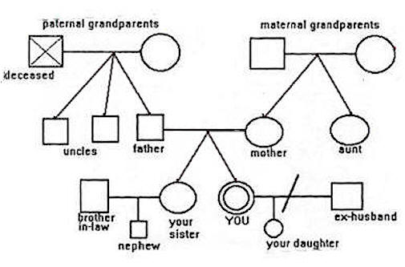

|

 The
Web address of this article is http://sfhelp.org/fam/geno.htm The
Web address of this article is http://sfhelp.org/fam/geno.htm
Updated
03-14-2015
Clicking underlined links here will open a
new window. Other links will open an informational popup,
so please turn off your
browser's popup blocker or allow popups from this nonprofit Web site.
If your playback device doesn't support Javascript, the popups may not display.
Follow underlined links after
finishing this article to avoid getting lost.
This is one of a series of lesson-5 articles
on how to evolve a
family. It shows you how to make a
visual diagram of who comprises your family and how they relate to each
other. Mapping your family can help you (a) spot problems you might not
otherwise identify, and (b) clarify your family's membership and identity.
If
you're in a stepfamily (or may be), go here.
This article assumes you're familiar with...
 About Family
Maps About Family
Maps
A
family map or genogram
shows all the living and dead people who genetically, emotionally,
and legally comprise a
family. It may span three or more generations of relatives, several
states, provinces, or continents, and shows how
each person "fits" in the group (how they're related).
With extra notations and symbols, these
maps
can show family alliances, conflicts, relationship
cutoffs, bonding strengths, and other important factors that
help describe a family’s structure and dynamics. Genograms can be specially
helpful for new family members and kids who wonder "Who are we all now?"
Genograms
and structural maps are useful visual tools to
help understand and manage your multi-generational family
homes.
To start,
view this sample map. Refer to it as you read the suggestions below.

How
to Map Your Family
If these
standard symbols don’t fit for you, invent your own!
Use ~3/4" circles for females, and squares
for males. Crosshatch or color these for extra-important people (important to whom?).
Use dashed circles and squares, or slashed or "X’d" symbols, to
represent dead, missing, or psychologically-detached people. Option: put
the person's current age on the circle or square.
Horizontal solid lines show legal marriages, and
dashed lines show committed unmarried
primary
relationships and important friendships, dependencies, hero/ines, and
supporters. A horizontal line with a
----//---- or ----X---- can
indicate a psychological or legal divorce;
Vertical or slanted
solid lines show genetic
connections. Dashed slanted lines can show adoptions, foster parents, or other
special adult-child relationships. Option - use double, triple,
or colored lines to indicate the importance or relative strength of the
bond between two people.
Zigzag, double, or wavy lines can symbolize
strong
emotional, legal, financial, or other kinds of current relationship connections, including
lust, grief, anger, fear, and "hatred." If helpful, add symbols like "+" and "-"
to show
friendship, love, hostility, and/or fear;
Include names, dates, pets, extra-important current friends,
sponsors, or authorities, major illnesses and disabilities, addictions,
and any other symbolic or text information that adds clarity and meaning to your map.
Now you have
some raw materials. On the top half of a blank page, lightly pencil in
symbols for...
-
your parents and each of
their living and dead children, including stillbirths, adoptions,
abortions, and foster kids; then add symbols for...
-
your and your siblings'
current and ex mates, and any living and dead children (your parents'
grandkids); then add...
-
ancestors, pets, special
friends, mentors, and child-caretakers, and a Higher Power (if any) who
significantly affect any member/s of your family now..
Leave as much white space as you can for notes and other information.
Finally, add names, ages, and any
other relevant information. Include any fourth-generation people like great-grandmothers
or great-uncles, of high current emotional significance to any of your
co-parents
or minor or grown children, whether living or dead. They count!
|
Final
check: one at a time, slip into the skin, mind, and heart of each minor and grown
child. Ask "Is everyone I have strong ( + and - ) feelings about on this map
now?" If any adults or kids are missing to any child - even if
you
don’t feel they belong - add symbols and connector lines for them now. |
If you’re satisfied that
everyone who
is an emotionally, genetically, and legally significant member of your family
is included now, darken the lines of all symbols and connector lines with a pen or
soft pencil. The map of your family is now done.
Pause,
breathe, and note your
emotions and "inner voices."
Try to be objective about your map, as though you were a
reporter or scientist. Personal and family
awarenesses and insights are the
real harvest of this useful project.
Options
Make your genogram a family
resource! Draw your family tree, and a
structural map of each home
comprising your family. Then use the maps, this family-trait
inventory, and colored pens or markers
to circle, asterisk, or note...
-
who
leads (a) each member's home and (b) this whole multi-home,
multi-generational
family now.
-
grandparents' ethnic
backgrounds - home countries, immigration data and reasons, etc
-
ancestral occupations and
education levels;
-
unusual events or
achievements (e.g. "Explored Africa on foot at age 17.")
-
adults and kids you feel have
significant psychological
("GWC")
-
the
of each home in your
extended family (Low > Moderate > High)
-
family members who
get the most and least attention from other members;
-
adults and/or kids who
have the most and least influence on how the family functions.
-
members who have been given
the family role of "black sheep" or "scapegoat."
-
strong
antagonisms (use zigzag lines "wwww" to connect their symbols) or
favoritisms and
alliances (use double-parallel ====== connector lines) between
pairs of
members;
-
adults and
kids who may not have fully
major losses
(broken bonds) - e.g. from divorces, geographic moves, and/or
deaths;
-
major
and/or relationship
between three or more members
-
any adults or kids whom you feel are currently
-
use your genogram to illustrate and discuss how the [wounds +
unawareness]
has passed down - and affected - your generations.
-
review, update, and
discuss your genogram annually;
-
use your genogram as a
reference when you make or amend your family
-
use your genogram with any
professionals you hire to assist with significant family problems;
For more options and perspective,
search the Web on "Genograms."
 Feedback please - take this anonymous
Feedback please - take this anonymous
Recap
This Lesson-5 article introduces a useful visual tool to help
you understand and manage your family - a family diagram or
"genogram." The article shows how to "map" a family, and suggests
possible ways to use the map. A related visual
tool is a family
.
Pause, breathe, and recall why you
read this article. Did you get what
you needed? If so, what do you need now? If not - what
you need?
Is there anyone you want to
discuss these ideas with? Who's answering these
questions - your wise resident
or
 Prior page
/
Lesson 5
/
Print page
Prior page
/
Lesson 5
/
Print page
site
intro /
course outline /
site search /
definitions / chat
/ contact
|